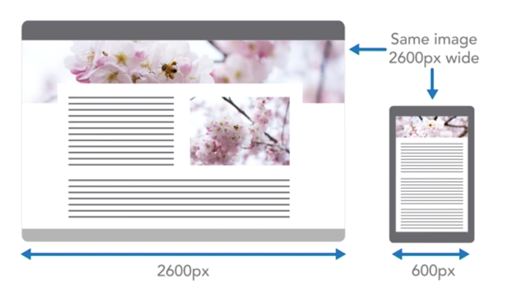
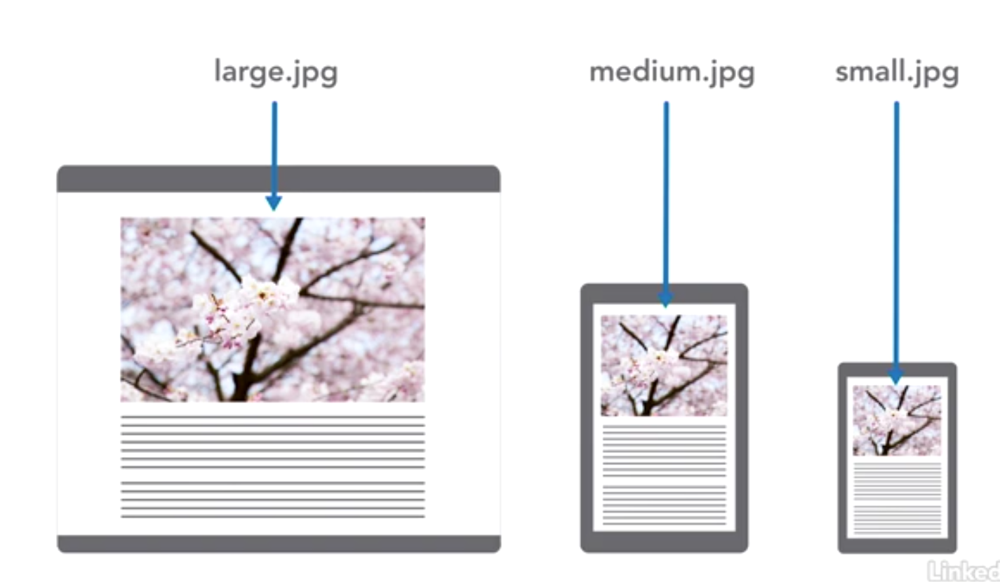
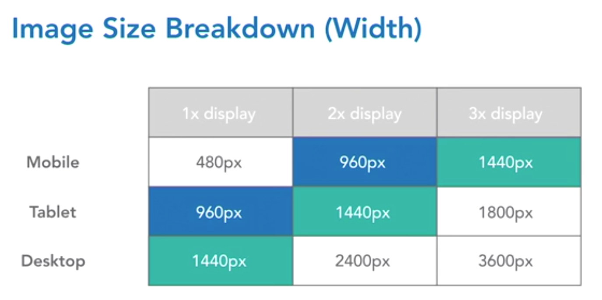
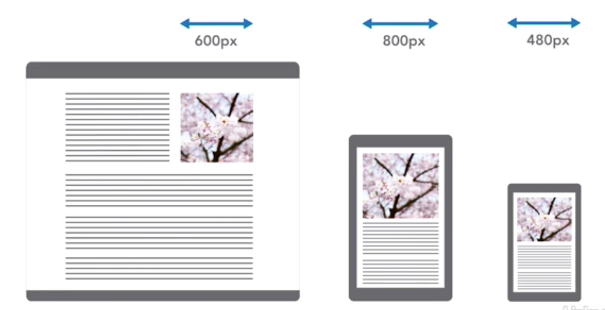

Responsive & Performant Images
Beyond alt & src
When Images are wasteful
Different devices - Different images
Mobile Responsiveness
-
Creating different sized images for mobile UX
- Less powerful CPUs
- Save Data on their plan
- Increase battery duration
- Avoid flash of empty space
- Reduce Load times
Image Formats
Raster vs Vector
File compression schemes (lossy vs lossless)
Number of colors & alpha
Using Width & Height
To avoid a Cumulative Layout Shift (CLS)
Define a width and height on your <img>
CLS is an SEO metric for Google
Pixel Density
Hardware pixel vs CSS pixels
<meta name="viewport" content="width=device-wdith, initial-scale=1.0">Responsive Breakpoints

- sm: 480 - 600px (lg phones & landscape mode)
- md: 960px
- lg: 1440px
- xl: 1800px
- original: 3600px
Factor in layout when resizing images.
Here, the tablet (not desktop) needs the largest image.
Software for Resizing
- Image Previewer (Mac)
- Gimp
- Squoosh
- ImageMagick
- ffmpeg
Advanced Image Attrs & Els
<picture></picture>
<source></source>
<figure></figure>
<figcaption></figcaption>
srcset="...w ...x"
media="(min-width: 600px)"
type="image/png"
// img
loading="eager | lazy"
decoding="auto | sync | async"
sizes=""
srcset=""
w (width descriptor) & x (pixel density
descriptor) are appended to items in srcset list
The <picture> Element
- For progressive enhancement & art direction
-
Its' just a wrapper around an
<img>that allows fallbacks for media queries and responsiveness. - so don’t style the picture element with css, nor add classes for css selectors.
-
Only style the
<figure>wrapper or the<img>itself - gives more detailed control over images to swap out than img element alone
The <figure> &
<figcaption> Elements

A caption
Try positioning figcaptions over image with
position: absolute; or with css grid!
The sizes attribute
MDN
- Limits the max image size for the largest screens as viewport grows (even if the container is maxed out)
- Can declare media queries in the image markup.
- It can limit the image used
- Without sizes attribute, browser assumes all images are `100vw`.
- You can add a desktop media query (i.e. (min-width: 900px)) to cap the image width as seen from the browser.
- This will help and leave the largest images for the high pixel density displays (4k etc)
Good to have an automated workflow to do this, since with large image galleries there is a lot of sizes attrs to change if the styling changes.
Srcset attribute MDN
<img srcset="img1.jpg 1x, img1.5.jpg 1.5x, img2.jpg 2x" >
<img srcset="img1.jpg 200w, img1.5.jpg 400w, img2.jpg 800w" sizes="50vw">
<!-- sizes="(max-width: 400px) 200px,
(max-width: 600px) 400px,
(max-width: 600px) 800px" -->
Optimizing Images
-
Steps:
- Optimize image format (save for web: webp or avif format)
- use jpeg for photos (raster) and PNG for graphics (Computer generated)
- Use SVG and icon fonts for logos and whenever possible
- Use consistent naming convention for image files (img_small.jpg…img_medium.jpg or img-600.jpg … img-800.jpg)
Img on MDN
Use Cases
- Art Direction:
- (Use cropped or seam-carved images for small devices)
- Progressive Enhancement:
- (use avif, then webp, then fallback to jpg)
Art Direction Tools
-
Choosing the important parts of the image for mobile viewports
- Cropping with standard image editor
- About Seam Carving
- Seam Carving Web Tool
Make sure all the different images convey the same message. Don’t crop or carve at expense of UX.
Progressive Enhancement Implemented
<picture>
<source srcset="img/Pic.svg" type="image/svg+xml" />
<source srcset="img/Pic.avif" type="image/avif" />
<source srcset="img/Pic.webp" type="image/webp" />
<img src="img/Pic.jpg" alt="Pic Description" />
</picture>Art Direction Implemented
<picture>
<source srcset="large.png" media="(min-width: 800px">
<source srcset="medium.png" media="(min-width: 600px">
// closeup.png is a cropped version:
<source srcset="closeup.png" media="(min-width: 400px">
// fallback is small to be conservative w/ data transfer
<img src="small.jpg" alt="Cherry blossoms" />
</picture>Lighthouse
- Performing a Lighhouse Audit in Dev tools
- Throttling web connection for emulating mobile devices/poor network
- Getting more out of Lighthouse